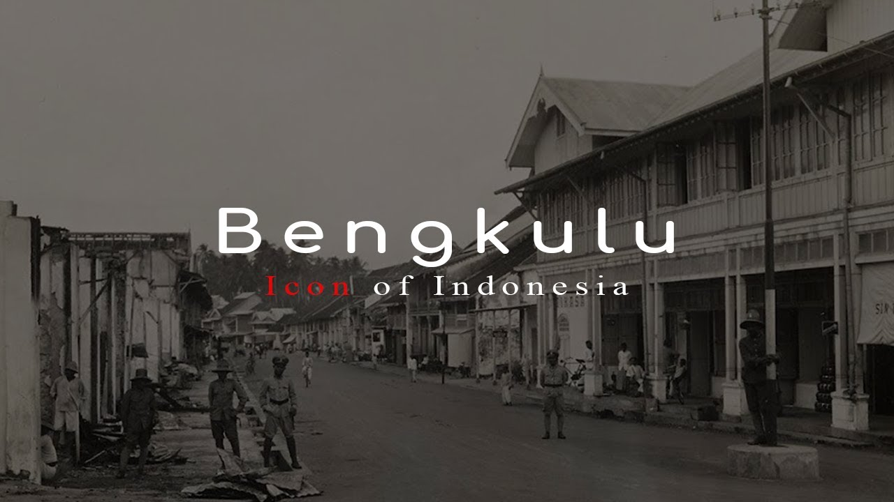

Sejarah

Kota Bengkulu, ibu kota Provinsi Bengkulu, memiliki sejarah yang panjang dan penuh dengan peristiwa penting. Nama "Bengkulu" sendiri memiliki beberapa versi asal-usul. Salah satunya adalah "Bangkai di Hulu," yang menurut cerita rakyat merujuk pada peristiwa perang antara kerajaan-kerajaan kecil di hulu Sungai Bengkulu yang mengakibatkan banyak korban jiwa. Versi lainnya, "Bencoolen," diberikan oleh bangsa Inggris pada tahun 1685, yang berasal dari istilah dalam bahasa Inggris "Cut Land," yang berarti "tanah patah," merujuk pada kondisi geologis wilayah tersebut. Selain itu, ada juga yang berpendapat bahwa nama Bengkulu berasal dari istilah "Bangkulon," yang dalam bahasa Melayu berarti "pesisir barat."
Sebelum kedatangan bangsa Eropa, wilayah Bengkulu dihuni oleh beberapa kerajaan lokal, seperti Kerajaan Sungai Serut, Kerajaan Selebar, dan Kerajaan Gedung Agung. Kerajaan-kerajaan ini memiliki hubungan erat dengan Kesultanan Banten dan berada di bawah pengaruh Kerajaan Inderapura. Kehadiran bangsa Eropa di Bengkulu dimulai dengan kedatangan Inggris pada abad ke-17. Pada tahun 1685, Inggris mendirikan pos perdagangan di Bengkulu yang dikenal dengan nama "Bencoolen." Selama lebih dari 140 tahun, Bengkulu berada di bawah kekuasaan Inggris, meskipun sering kali menghadapi perlawanan dari penduduk setempat. Inggris membangun benteng pertahanan, seperti Fort Marlborough dan Fort York, untuk melindungi pos perdagangan mereka.
Pada tahun 1824, melalui Perjanjian London, Bengkulu diserahkan kepada Belanda, yang menjadikannya sebagai bagian dari Residentie Sumatera Selatan pada tahun 1878. Selama masa penjajahan Belanda, Bengkulu menjadi pusat perdagangan dan penting dalam rute pelayaran di Asia Tenggara. Namun, setelah Indonesia merdeka, Bengkulu menjadi bagian dari Provinsi Sumatera Selatan. Kemudian, pada tahun 1967, berdasarkan Undang-Undang Nomor 9 Tahun 1967, Bengkulu akhirnya diakui sebagai provinsi tersendiri, dengan Kota Bengkulu sebagai ibu kotanya. Kini, Kota Bengkulu dikenal dengan julukan "Bumi Rafflesia" karena menjadi habitat bagi bunga Rafflesia arnoldii, bunga terbesar di dunia. Selain keindahan alamnya, kota ini juga memiliki sejumlah situs bersejarah yang menjadi daya tarik wisata, seperti Rumah Pengasingan Bung Karno yang kini menjadi salah satu objek wisata penting di kota ini. Sebagai ibu kota provinsi, Bengkulu terus berkembang menjadi pusat pemerintahan, perdagangan, dan pariwisata di wilayah Sumatera.